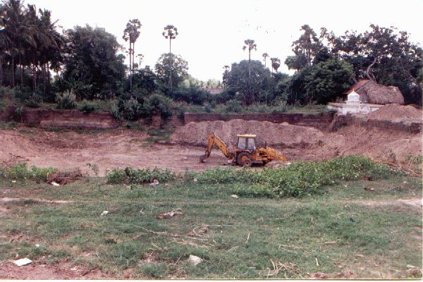
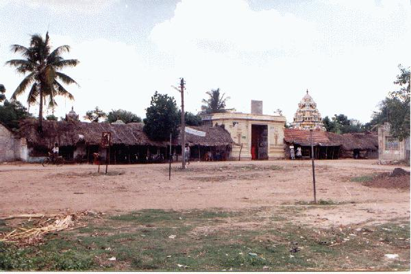
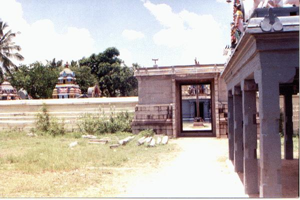
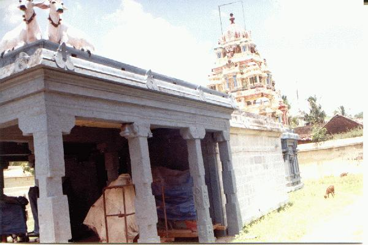
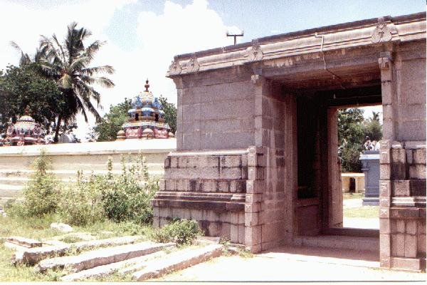
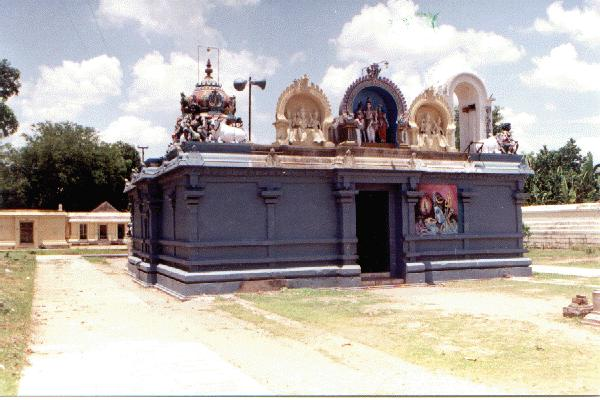
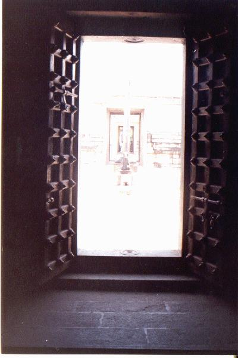
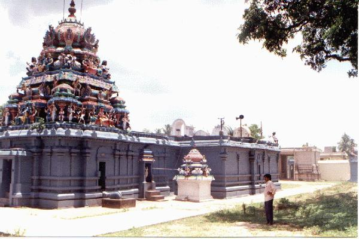

tuṟiyūr
- Identifier: NA15
- Modern Name (NIC):
- Modern Name (M.I.): tiruttuṟiyūr
- Modern Name (Govt Press): tiruttaḷūr
- Modern Name: Tiruttuṟiyūr
- Modern District & Taluk: kaṭalūr DT (?kaṭalūr/?paṇruṭṭi TK)
- Old administrative location: South Arcot DT (Cuddalore TK)
- Nearby town:
- Railway station: Tiruttuṟiyūr (W: 0.75 km)
- Longit. 79 deg. 32'; Latit. 11 deg. 49' [NA15]
- C.D.Maclean-3: entry: , p. , col. , lines
[ , lat. deg. ', long. deg. ']
- Location: according to PK: Naṭu Nāṭu (NA15)
- Name inside hymns:
- Name inside PK: tuṟiyūr
- Rank inside third volume of PIFI: 152
- Rank inside Civastala Mañcari: 151
- Rank on PY576 map: 59
- Total number of patikam-s: 1
- Cuntarar: 1 patikam
[[Note (VMS): this shrine is now known as tiruttalur and tiruttaḷūr (??)]]
11 pictures taken on 1998 August 4th (Tuesday, 12:30 p.m.)











- Patikam 7_13